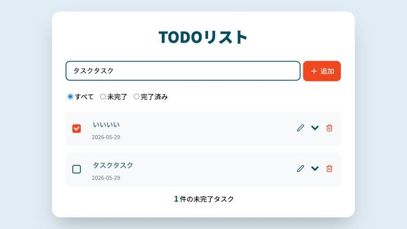

概要
React/TypeScriptでスTODOリストを作成しました。
localStorageでデータを保存しています。
使用技術
React
TypeScript
HTML / CSS
Vite
工夫した点・取り組み
React/TypeScriptの学習を目的として制作しました。
- URL https://fujikurah.github.io/todo-list/

React/TypeScriptでスTODOリストを作成しました。
localStorageでデータを保存しています。
React
TypeScript
HTML / CSS
Vite
React/TypeScriptの学習を目的として制作しました。